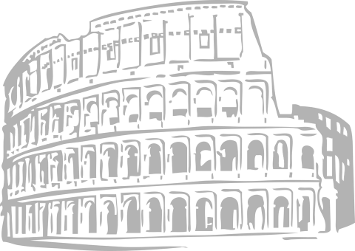
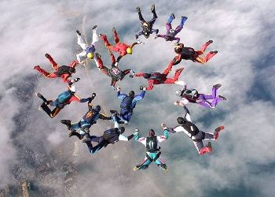
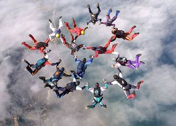

Sports
Introduction
On this webpage we want to show you some different types of sports and make you familiar with them.Sport is an activity involving physical, mind, motorised, co-ordination or animal-supported exertion and skill in which an individual or team competes against another or others for entertainment and money.
 
